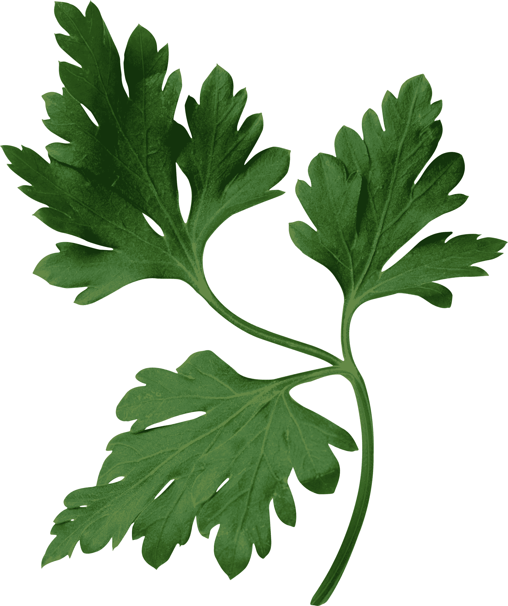
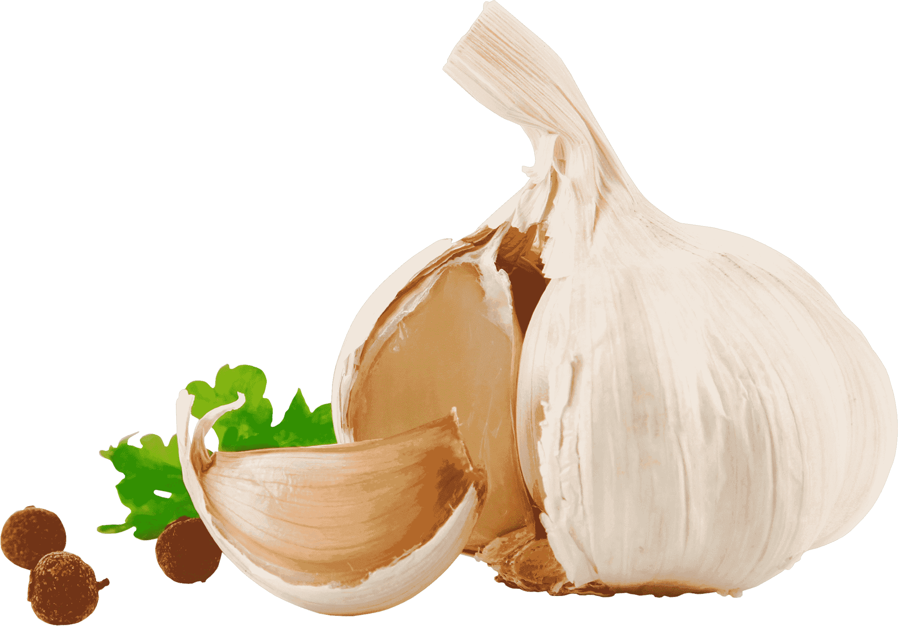

Ресторан «Perfect» расположенный в самом сердце Дарницкого района Киева. Это необыкновенно уютное место для Ваших встреч, где Вы сможете отлично отдохнуть, позабыть о серых буднях и просто весело провести время в кругу своих родных, друзей и коллег. Презентабельный и стильный дизайн, интеллигентная атмосфера, изысканное меню и демократичные цены неприменно приятно удивят и порадуют гостей нашего ресторана. Но это еще не все, ведь наш главный конек - кухня! У нас действительно очень вкусно кормят! Среди фаворитов нашего меню стоит отметить: Теплый салат с сочной телятиной и малиново-имбирной заправкой, салат «Уолдорф» (нежное филе норвежского лосося, авокадо, помидоры и листья салата Ромэн), Филе сибаса на подушке из цукини с сыром Филадельфия и манговым кюли, Тигровые креветки "Фламбе", Архиерейскую уху с лососем и морепродуктами на бульоне с домашнего петуха и расстегаями с филе норвежского лосося.
Изюминка и главная особенность приготовление блюд в нашем ресторане - специальный способ «фламбе». Мясо и рыбу прямо при Вас приготовят по методу «фламбе», что превратит обычный поход в ресторан - в кулинарное шоу! Сочные стейки сначала польют крепким алкогольным напитком, а затем подожгут, после чего заботливо переложат на вашу тарелку. Благодаря такой горячей обработке продукты приобретают неповторимый вкус и аромат, а также покрываются хрустящей корочкой. Винная карта весьма обширна – здесь есть и французские, и чилийские вина, а также широкий выбор крепких напитков - всевозможные настойки, джин, водка, текила, ром, виски, ликеры, коньяк. В каждый четверг, пятницу и субботу Вы сможете наслаждаться живой музыкой. Это сделает Ваш вечер еще более насыщенным и незабываемым.
Приятным сюрпризом для именинников, которые закажут банкет в ресторане «Фламбер», станет скидка 10%. В нашем уютном ресторане создано все для того, чтобы Вы провели вечер в теплой компании, без лишнего пафоса и суеты. Здесь все лаконично, легко и ненавязчиво! Мы предлагаем Вам завести новую страницу Ваших семейных традиций: ужинать в ресторане при свечах, отмечать семейные праздники за своим любимым столиком, радоваться успехам друг друга под звуки вечной музыки!
 Karaoke Bar Perfect – это уютная атмосфера, профессиональный звук и самые харизматичные ведущие! Уникальность нашего клубного комплекса состоит в том, что после исполнения любимых хитов, вы всегда можете потанцевать в зале disco или отдохнуть на lounge-террасе. Karaoke Bar работает ежедневно, а по будням всегда радует девушек приятными подарками и вкусными сюрпризами!
Благодаря высококлассному профессиональному оборудованию, огромному выбору музыкальных композиций (более 7000), отличному качеству звучания, посещение караоке-залов станет настоящим событием. Профессиональные звукорежиссёр и ведущий позволят любому гостю почувствовать себя настоящим исполнителем, отлично провести время и получить колоссальный заряд позитива!
В нашем караоке-баре есть все необходимое для любителей пения: